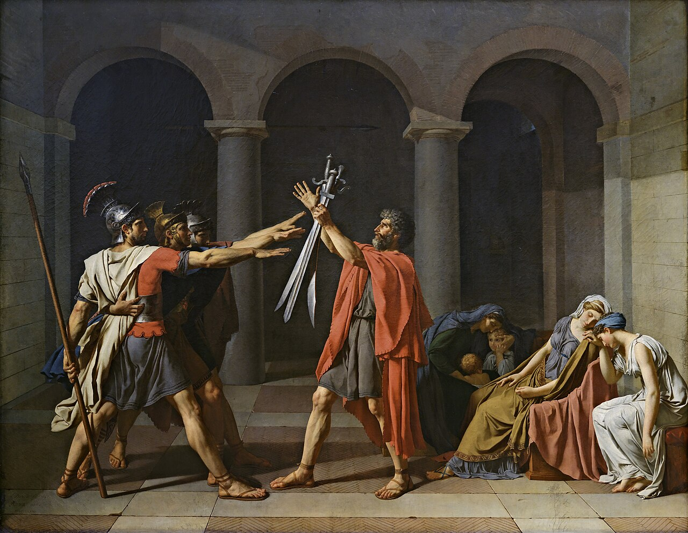
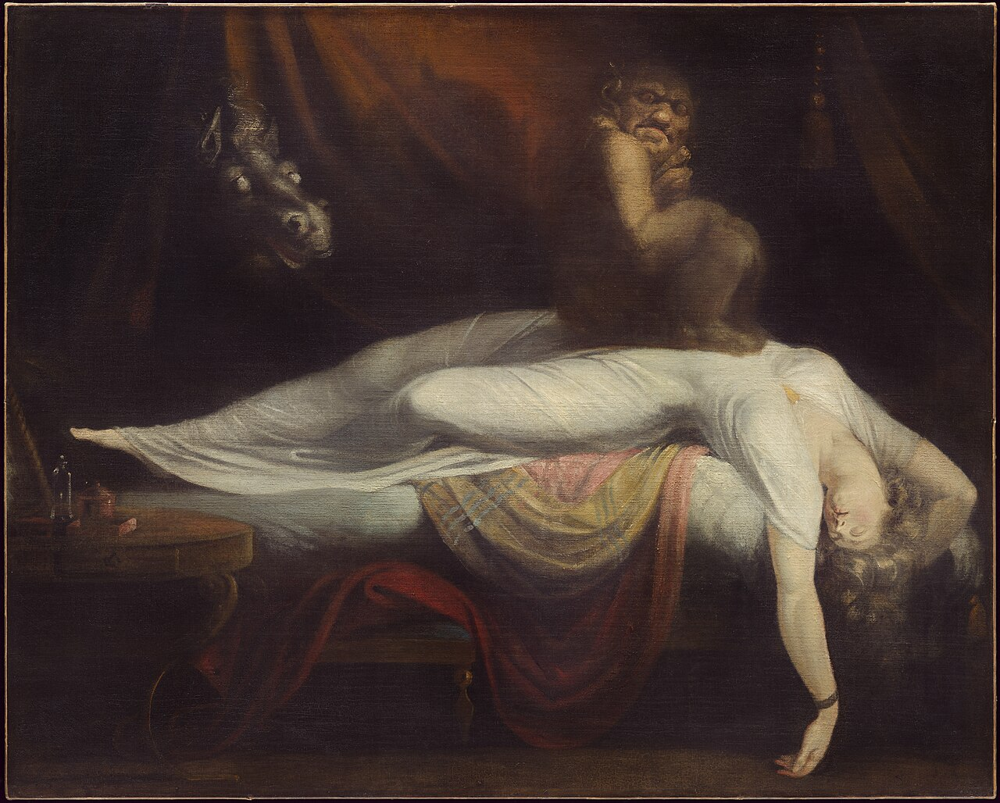
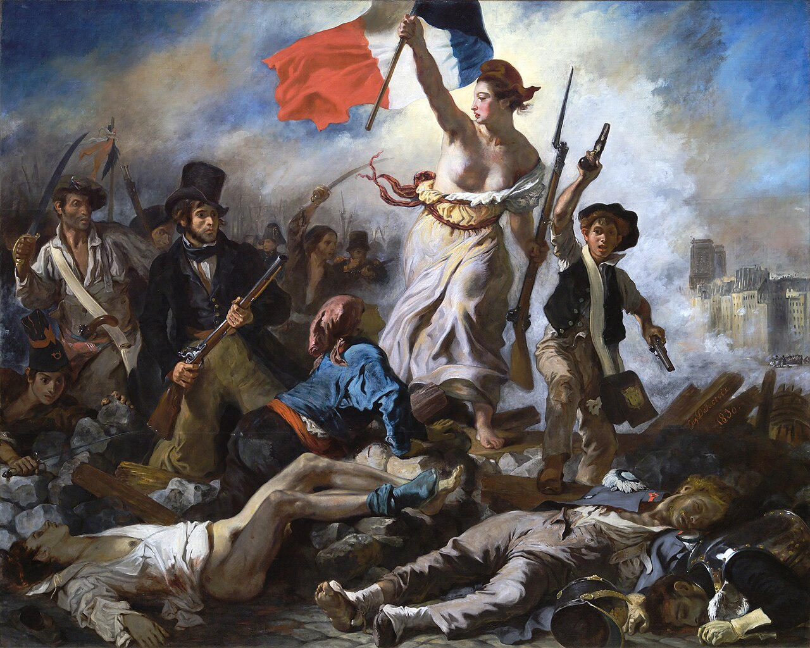
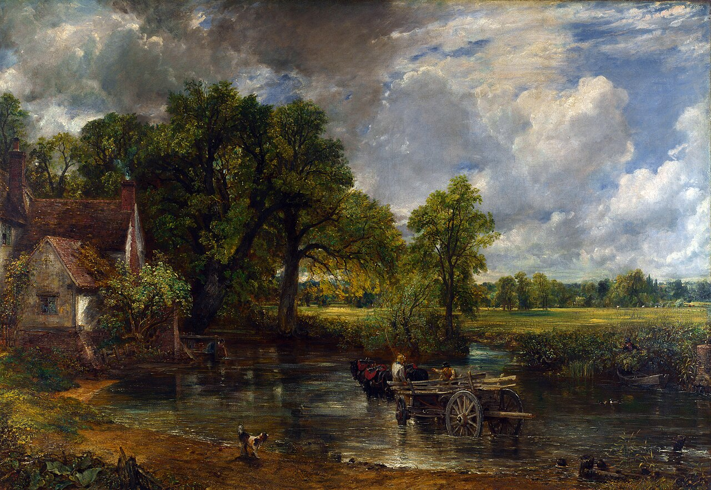
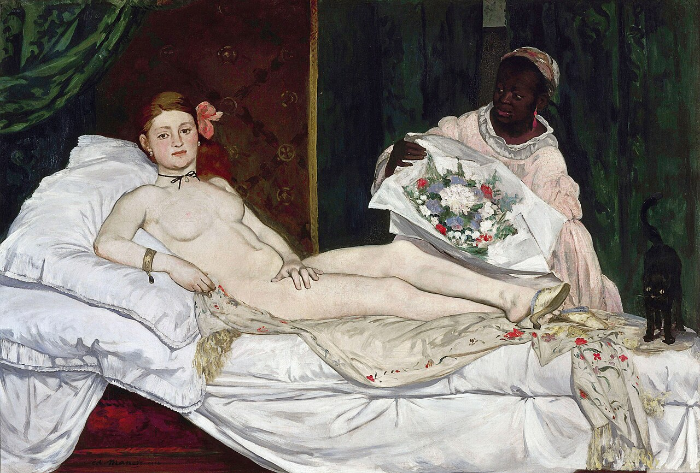

The Swing
RococoFranceOil painting
A fast route into elegance, flirtation, and decorative pleasure.
Open source / museum context ↗c. 1700 → 1875
Rococo, Neoclassicism, Romanticism, and Realism overlap rather than lining up neatly



What to notice
The story forks into Rococo, Neoclassicism, Romanticism, and Realism, so the period is best understood as overlapping arguments.
Key works
Start with the image, then use the note to fix the main point in your mind.
A fast route into elegance, flirtation, and decorative pleasure.
Open source / museum context ↗Moral clarity, austerity, and public virtue.
Open source / museum context ↗Dreams and psychological strangeness crash into polite art.
Open source / museum context ↗History painting charged with politics and emotion.
Open source / museum context ↗
Landscape becomes emotionally and nationally important.
Open source / museum context ↗
Ordinary labor becomes worthy of serious painting.
Open source / museum context ↗
Modern painting gets flatter, harsher, and more confrontational.
Open source / museum context ↗Where to go next